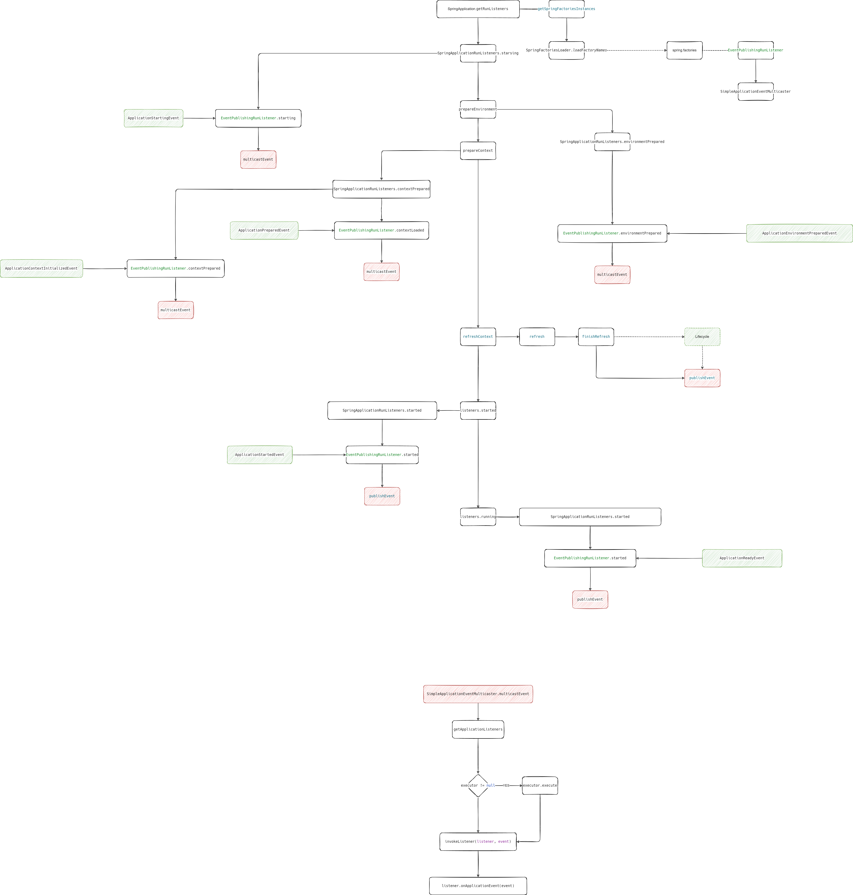

SpringBoot事件机制
spring boot创建ApplicaitonContext的时候。会发布一系列的事件
事件列表
- ApplicationStartingEvent
- ApplicationEnvironmentPreparedEvent
- ApplicationContextInitializedEvent
- ApplicationPreparedEvent
- ApplicationStartedEvent
- AvailabilityChangeEvent(2.3.0开始才有)
- ApplicationReadyEvent
- AvailabilityChangeEvent
- ApplicationFailedEvent
ApplicationPreparedEvent ~ ApplicationStartedEvent之间，其他组件的事件
- WebServerInitializedEvent
- ServletWebServerInitializedEvent
- ReactiveWebServerInitializedEvent
- ContextRefreshedEvent
事件触发位置
Application的run方法触发事件的相关代码位置
public ConfigurableApplicationContext run(String... args) {
StopWatch stopWatch = new StopWatch();
stopWatch.start();
ConfigurableApplicationContext context = null;
Collection<SpringBootExceptionReporter> exceptionReporters = new ArrayList<>();
configureHeadlessProperty();
SpringApplicationRunListeners listeners = getRunListeners(args);
listeners.starting();// ApplicationStartingEvent
try {
ApplicationArguments applicationArguments = new DefaultApplicationArguments(
args);
ConfigurableEnvironment environment = prepareEnvironment(listeners,
applicationArguments);// ApplicationEnvironmentPreparedEvent
configureIgnoreBeanInfo(environment);
Banner printedBanner = printBanner(environment);
context = createApplicationContext();
exceptionReporters = getSpringFactoriesInstances(
SpringBootExceptionReporter.class,
new Class[] { ConfigurableApplicationContext.class }, context);
prepareContext(context, environment, listeners, applicationArguments,
printedBanner);// ApplicationContextInitializedEvent, ApplicationPreparedEvent
refreshContext(context);
afterRefresh(context, applicationArguments);
stopWatch.stop();
if (this.logStartupInfo) {
new StartupInfoLogger(this.mainApplicationClass)
.logStarted(getApplicationLog(), stopWatch);
}
listeners.started(context);// ApplicationStartedEvent
callRunners(context, applicationArguments);
}
catch (Throwable ex) {
handleRunFailure(context, ex, exceptionReporters, listeners); // ApplicationFailedEvent
throw new IllegalStateException(ex);
}
try {
listeners.running(context); // ApplicationReadyEvent
}
catch (Throwable ex) {
handleRunFailure(context, ex, exceptionReporters, null); // ApplicationFailedEvent
throw new IllegalStateException(ex);
}
return context;
}
事件监听
public class StartApplication {
public static void main(String[] args) {
SpringApplication app = new SpringApplication(StartApplication.class);
app.addListeners(new CustomListener());
app.run(args);
}
public static class CustomListener implements ApplicationListener<ApplicationEvent> {
@Override
public void onApplicationEvent(ApplicationEvent event) {
if (event instanceof ApplicationStartingEvent) {
}
else if (event instanceof ApplicationEnvironmentPreparedEvent) {
}
else if (event instanceof ApplicationPreparedEvent) {
}
else if (event instanceof ContextClosedEvent && ((ContextClosedEvent) event)
.getApplicationContext().getParent() == null) {
}
else if (event instanceof ApplicationFailedEvent) {
}
}
}
}
事件流程图
